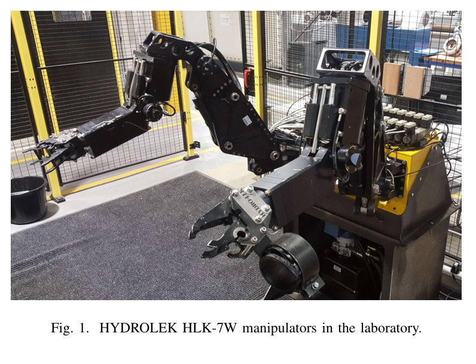
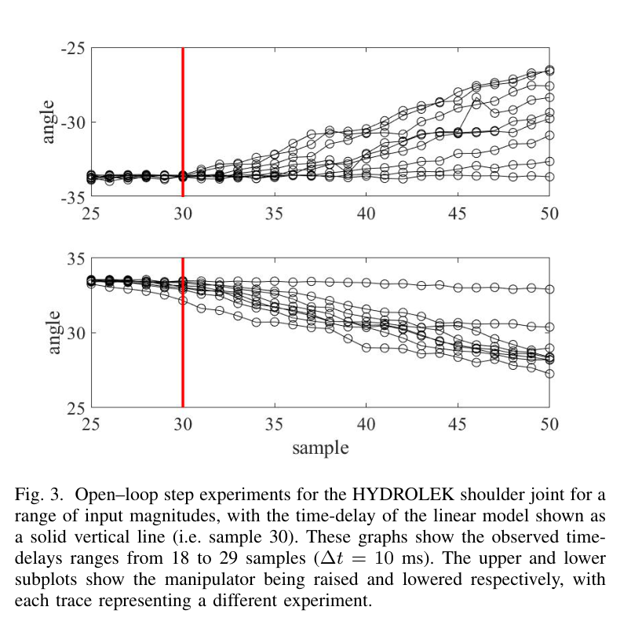
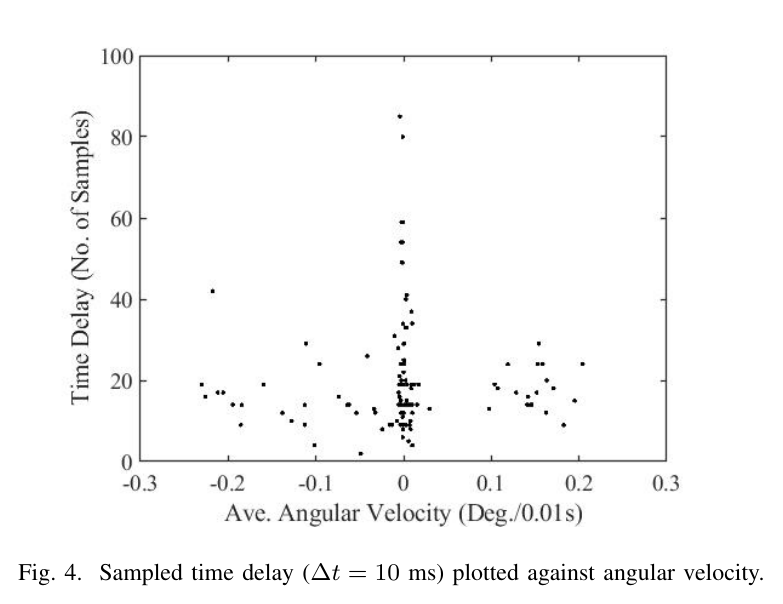

ABSTRACT / 초록
원자력 시설 해체용 유압 매니퓰레이터의 저수준 제어를 개선하려면, 입력과 움직임 사이의 지연부터 제대로 식별해야 한다. 이 리뷰는 HYDROLEK HLK-7W 두 대의 실험 사례를 통해 지연이 시험마다 달라지며, 운전 중에도 변할 수 있다는 문제를 다룬다. 압력 동역학·데드밴드·압축성·마찰 등의 원인을 검토하고, 시간지연 제어와 온라인 지연 추정 등 관련 접근을 정리한다. 핵심은 완성된 새 제어기의 제시보다 고정 지연 모델의 한계를 드러내고 후속 연구의 방향을 제안하는 데 있다.
한 관절, 여러 지연
어깨 관절 스텝 응답의 지연은 18~29샘플로 흩어졌다. 10ms 샘플링에서는 180~290ms다.
후보 방법과 검증은 별개
TDC, 다중 모델, 확률적 추정, Smith 예측기가 검토되지만 유압의 가변·미지 지연에 대한 검증 범위는 다르다.
운전 영역을 나눠 보라
저자는 데드밴드·속도 상승·포화 영역별 모델과 유량 피드백을 활용하는 캐스케이드 구조를 제안한다.
명령은 같아 보여도,
움직임의 시작은 달라진다
논문의 출발점은 실제 장비의 모델 식별이다. 유압 시스템에서는 데드밴드와 지연 같은 불확실성이 제어 성능을 좌우하지만, 저자들은 특히 변하는 지연이 기존 문헌에서 충분히 다뤄지지 않았다고 지적한다.

| 유압원 | Bosch Rexroth 파워 유닛 · 5.5 L/min · 220 bar · 탱크 15 L |
|---|---|
| 제어 장치 | NI cDAQ 9132, ADC 32ch + DAC 16ch 구성 ×2, P02AD1 밸브 |
| 센서 | 회전 전위차계로 관절각 측정 |
| 입력·샘플링 | ±10 스케일 신호 · 샘플링 간격 10ms |
상수 τ에서 시간에 따라 변하는 τ(t)로
관절 모델은 지연된 입력을 받는 1차 식에서 시작한다. 개루프 데이터에 SRIVC를 적용해 파라미터를 추정하면, a1은 거의 0이어서 관절은 적분기처럼 거동한다. 입력과 각속도 사이의 정적 비선형성을 q로 표현하고, 여기에 시변 지연을 도입하는 것이 문제 설정의 핵심이다.
θ: 관절각 · u: 입력 · τ: 지연. a1, b1, τ는 CAPTAIN 툴박스의 SRIVC로 추정한다. a1 ≈ 0이며, b1의 상태 의존성은 입력에 대한 정적 비선형 q{·}로 표현된다.
두 범위는 관측 대상이 다르다. 전자는 특정 어깨 관절의 스텝 시험이고, 후자는 기체 전체의 범위다. 이를 하나의 확률분포나 모든 관절의 공통 특성으로 읽어서는 안 된다.

30샘플, 즉 300ms의 고정 지연을 기준으로 보면 실제 응답 시작과의 차이는 10~120ms다. 관측 지연 자체의 최대·최소 차이는 110ms다. 모든 시험에서 100ms 이상 어긋난다는 뜻은 아니지만, 하나의 지연값만으로는 시험 사이의 차이를 설명하기 어렵다.

지연을 하나의 숫자로 맞추기 전에,
어떤 조건에서 달라지는지 물어야 한다.
지연은 어디에서 생기는가
측정된 지연에는 여러 현상이 겹칠 수 있다. 밸브와 유체의 동역학, 움직임이 시작되기 위한 마찰 극복, 계산과 통신이 모두 후보에 들어간다. 아래 표는 리뷰가 다루는 원인 목록이며, 각 원인의 기여도를 실험적으로 분리한 결과는 아니다.
| 요인 | 리뷰에서 다루는 설명 |
|---|---|
| 계산 지연 | 위치 신호에서 제어 오차를 계산하는 데 걸리는 시간. Magyar(2010) 관련 논의. |
| 압력 동역학 | 압력이 축적되는 과정에 따라 밸브를 통과하는 유동이 달라진다. 개루프에서도 나타나는 현상이다. |
| 데드밴드 | 펌프·밸브의 방향 전환과 관련한 불연속 및 입력에 반응하지 않는 구간. |
| 기름 압축성 | 공기 혼입, 부품의 탄성 변형과 노화, 압력·온도 변화 등의 영향. |
| 밸브 유동 | 밸브에서 발생하는 압력 손실, 과도 유동 및 난류. |
| 마찰 | 정지·쿨롱·점성 마찰과 스틱슬립 현상. |
| 통신 지연 | 고정 성분과 무작위 성분으로 구분되는 지연. Pan(2006) 관련 논의. |
실험을 읽는 기준. 개루프에서도 지연이 나타난다는 점은 계산이나 피드백 구조만으로 전체 현상을 설명하기 어렵다는 단서다. 다만 관측된 지연만으로 압축성·마찰·밸브 유동의 영향을 각각 특정할 수는 없다.
제어 방법은 많다.
무엇을 검증했는지가 중요하다
리뷰의 문헌 지도는 두 갈래다. 하나는 유압 매니퓰레이터에 적용된 제어 방법이고, 다른 하나는 일반 제어 이론에서 발전한 시변 지연의 모델링·추정 방법이다. 두 갈래를 연결할 때는 적용 가능성과 실제 검증을 구분해야 한다.
유압 매니퓰레이터의 제어 접근
| 접근 | 대표 문헌 | 지연 관점에서 읽을 점 |
|---|---|---|
| 일반화 예측 제어 GPC | Kotzev, 1992 | 원리상 가변·미지 지연을 다룰 수 있지만, 리뷰에서는 해당 유압 적용의 검증이 남아 있다고 정리한다. |
| 백스테핑·슬라이딩 모드·적응 제어 | Sirouspour, 2001 등 | 상세 모델과 튜닝이 필요하다. |
| H₂ / H∞ PI·피드포워드 | Lin, 2011 | 선형 모델에 기반하며 비선형성은 고려하지 않는다. |
| 시간지연 제어·추정 TDC / TDE | Wang, 2017 | 지연된 신호로 묶음 동역학을 추정·상쇄한다. 이산 TDC에 데드밴드 보상과 안티와인드업을 결합했으며, 부하 변화에 대한 강인성과 지연 불확실성의 검증은 구분해야 한다. |
| 명령 필터 + TDC | Lee, 2012 | 위상 지연 보정을 다룬다. |
이름 때문에 혼동하기 쉬운 TDC. 시간지연 제어는 과거 신호를 이용해 동역학을 추정하는 접근이다. 이 이름 자체가 액추에이터의 미지·시변 입력 지연을 추정하거나 보상했다는 뜻은 아니다.
일반 제어 이론의 시변 지연 접근
| 접근 | 대표 문헌 | 리뷰의 연결점 |
|---|---|---|
| 내부 다중 모델 + 온라인 지연 추정 | Ben Atia, 2017 | 여러 지연 후보의 모델 출력을 비교하고 실측과 가장 가까운 모델을 선택한다. |
| 마르코프 체인 + EM | Zhao, 2017 | 지연을 확률적 상태 변화로 모델링하는 접근. |
| 변분 베이즈 추정 | Ma, 2018 | 지연을 추정하는 확률적 접근. |
| 신경망 예측 제어 | Huang & Lewis, 2003 | 통신 지연을 대상으로 한 예측 제어. |
| Smith 예측기 유사 구조 | Sbarciog, 2008 | 지연을 고려하는 예측기 구조. |
| PIP + Smith 예측기 | Taylor, 1998 | 리뷰에서 소개된 검증은 시뮬레이션 수준. |
| 기타 지연 추정 | Barbot, 2012 Chen, 2015 Padilla, 2019 Tan, 2004 | 지연 추정 관련 문헌군. Tan의 접근은 신경망을 활용한다. |
표의 저자·연도는 제공된 노트에 기록된 인용 식별자다. 개별 연구의 세부 조건과 서지정보는 원 리뷰의 참고문헌에서 확인해야 한다. 이 표는 성능 순위나 동일 조건의 비교 결과가 아니다.
하나의 모델 대신,
운전 영역별로 나누는 접근
저자들이 제안하는 첫 방향은 관절의 전체 거동을 한 번에 설명하려 하기보다, 운전 영역을 나누어 각각 선형 모델을 식별하는 것이다. 이를 Ben Atia의 다중 모델 접근과 연결한다.
입력에 대한 움직임이 제한되는 영역의 모델
데드밴드 밖에서 속도가 커지는 영역의 모델
입력 증가에 대한 응답이 포화되는 영역의 모델
관절은 개별적으로 제어하고, 목표 관절값은 역기구학으로 구하는 방향이다. 리뷰는 이와 관련해 Hsia(1991)를 언급한다. 영역별 식별과 지연 추정을 결합하는 발상은 유용하지만, 제공된 노트에서 완성된 통합 제어기의 성능 검증까지 확인되지는 않는다.
두 번째 방향: 유량을 측정하는 캐스케이드
안쪽 루프는 유량을 측정해 밸브 전압을 조절하고, 바깥 루프는 유량 목표를 정한다. 저자들은 이 구조가 지연과 마찰의 영향을 완화할 가능성을 제시한다.
대가는 센서다. 추가 유량 측정이 필요하며, 논문이 염두에 둔 방사선 환경에서는 센서 도입이 쉽지 않을 수 있다. 제어 구조의 장점과 현장 계측의 제약을 함께 평가해야 한다.
HR35에서는 무엇부터 확인할까
이 절은 원 논문의 결론이 아니라 노트 작성자의 HR35 적용 해석이다. ETH 2026, Taheri 2022 및 연구 축 B·G는 기존 프로젝트 맥락의 참조이며, 제공된 노트에는 해당 문헌의 전체 서지정보가 없다.
-
지연 지표를 평균에서 조건별 분포로 넓힌다.
20Hz, 즉 50ms 간격으로 샘플링하면 0.2~1초 지연은 4~20샘플에 해당한다. 이 환산은 HR35 실측값을 뜻하지 않는다. 실차·트윈 비교에서는 명령 크기와 방향별로 반복 측정해 범위와 분포를 살핀다. 노트에서 언급한 ETH 2026의 관절별 상수 τ 가정도 HR35에서는 검증할 가정이다.
-
명령 크기와 방향을 바꿔 스텝 시험을 구성한다.
속도 의존성의 단서는 한 크기의 스텝만으로 부족할 수 있음을 시사한다. 노트가 참조하는 ETH 2026의 −0.85~0.85 단계 시험처럼 여러 명령 수준을 포함하고, 이를 연구 축 G의 시험 설계에 반영한다.
-
트윈과 실차의 차이를 원인 후보로 연결하되, 단정하지 않는다.
노트에 따르면 HR35 트윈에는 압력 동역학(β)과 데드밴드가 있고, 공기 혼입·노화·통신 지연은 없다. 실차의 지연 분포가 더 넓다면 이 누락 요인들은 조사 후보가 된다. 다만 분포 차이만으로 세 요인 중 어느 것이 원인인지 판별할 수는 없다.
-
밸브 곡선의 세 영역을 첫 시험 단위로 삼는다.
데드밴드·상승·포화 영역별 지연 측정은 비교적 부담이 작은 출발점이다. 노트는 이를 Taheri 2022의 GP 특성곡선과 유사한 구간 구조로 해석한다. 이는 시험을 설계하기 위한 연결이며, 두 방법의 동등성을 확인한 결과는 아니다.
첫 시험에서 남겨야 할 기록
이 리뷰를 실험으로 옮긴다면, 제어기를 바꾸기 전에 지연 측정의 기준과 조건을 먼저 맞추는 것이 좋다. 아래는 논문 내용에서 확장한 시험 준비용 체크리스트다.
- 명령 입력 시점과 움직임 시작 시점의 판정 기준을 명시한다.
- 샘플링 간격과 지연 환산 단위를 함께 기록한다.
- 명령 크기·방향·운전 영역을 구분하고 같은 조건을 반복한다.
- 조건별 지연 범위와 분포를 실차·트윈에 같은 기준으로 적용한다.
- 관측된 차이와 그 차이를 설명하려는 원인 가설을 별도로 기록한다.
좋은 지연 모델은
좋은 측정 질문에서 시작된다
이 리뷰의 가치는 새 제어 알고리즘 하나보다, 유압 지연을 바라보는 관점을 정리한 데 있다. 지연은 고정된 장비 사양 하나로 끝나지 않는다. 입력과 운전 조건에 따라 달라질 수 있고, 그 변화는 모델 식별과 제어기의 가정을 흔든다.
HR35의 다음 단계도 구체적이다. 명령 크기와 방향을 바꾸며 지연을 반복 측정하고, 데드밴드·상승·포화 영역별로 비교한다. 상수 τ가 충분한지는 그 결과를 보고 판단할 수 있다.
출처와 읽기의 범위
PRIMARY REVIEW
Unknown and Time-Varying Time Delays in the Modelling and Control of Hydraulic Actuators: Literature Review
Olivia L. R. Albrecht · C. James Taylor
Lancaster University, Engineering Department
2020 Australian and New Zealand Control Conference (ANZCC)
DOI: 10.1109/ANZCC50923.2020.9318375
노트에 명시된 열람본: Lancaster eprint 147172
- 편집 범위. 제공된 논문 요약 노트를 바탕으로 재구성한 해설이다. 개별 인용 문헌을 별도로 검증한 체계적 문헌고찰은 아니다.
- 수치 해석. 180~290ms는 18~29샘플 × 10ms, 고정 모델과의 10~120ms 차이는 300ms와 해당 범위의 차이에서 계산했다.
- 그림. 원문 그림 1·3·4에 해당하는 제공 이미지를 사용했다. 운전 영역 및 캐스케이드 도식은 노트 내용을 설명하기 위한 개념도다.
- 해석의 경계. 속도 의존성은 단서로, 다중 모델과 캐스케이드는 제안으로 읽는다. HR35 관련 판단은 적용 가설이며 원 논문에서 검증된 결과가 아니다.